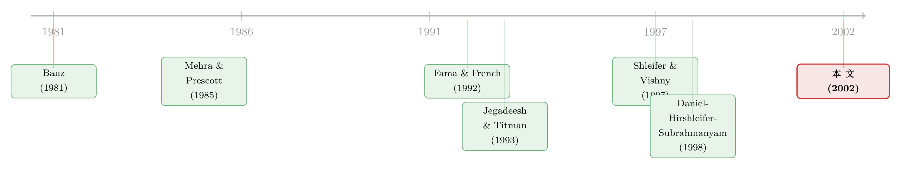

三个嫌疑人，一桩没有结案的悬案：异象为什么不被套利掉
本文读的是 Heaton & Korajczyk (2002, Review of Financial Studies)：这是 2000 年 Kellogg/SFS「市场摩擦与行为金融」会议论文集的卷首导言。它没有数据、没有模型，却干了一件别的论文不屑去做的事——把「异象为什么不被套利掉」这桩悬案的三个嫌疑人并排押到审讯室里，逐一过堂，最后给出一句方法论上的判词：真正的进步，不在于谁解释了某个异象，而在于谁的理论能做出超出该异象本身的、可被证伪的预测。
1 一桩悬案
先把案情交代清楚。
过去几十年，金融经济学家在市场数据里翻出了一堆「不该存在」的东西。股权溢价之谜 (equity premium puzzle)——股票相对债券的超额回报高得离谱，用消费的协方差怎么也凑不出来 [Mehra and Prescott (1985)]；小公司效应 (small-firm effect)——小盘股的平均收益高过它该有的风险补偿 [Banz (1981); Fama and French (1992)]；动量 (momentum)——过去三到十二个月的赢家会继续赢、输家会继续输 [Jegadeesh and Titman (1993)]；还有事件后的漂移 (postevent drift)——好消息公布之后，价格要慢吞吞地走上好一阵 [Ritter (1991)]。
每一个异象的「发现」逻辑都是同一套：找到一组组合，它的平均收益相对于风险太高了——这里的「风险」，要么是收益与市场组合的协方差（CAPM），要么是与总消费的协方差（消费 CAPM）。
于是悬案就来了。如果支撑这些模型的假设是对的——市场结构是那样、人是那样理性——那么观察到收益里的这些规律，理性的人就应该去交易、去把它们吃掉。可他们没有。钱明明摆在桌上，为什么没人去捡？
这桩悬案，正是过去几十年资产定价文献的「主线剧情」。而 Heaton 和 Korajczyk 这篇导言的全部价值，就在于它没有像大多数论文那样只追着一个嫌疑人跑，而是把三个嫌疑人一起请进了审讯室。
2 三个嫌疑人
这一节是全文的骨架。作者把「为什么没人去套利」的回答整理成三类。记住它们，比记住论文集里任何一篇具体文章都重要。
嫌疑人一：证据本身就不可靠。
第一种解释，直接质疑那些异象的统计可信度。问题可能出在数据窥探 (data snooping)，也可能出在样本太短。
数据窥探的隐患为什么大？因为我们天生倾向于去搜寻、去聚焦那些最戏剧化的证据 [Lo and MacKinlay (1990)]。这种样本选择会在检验统计量里埋进一个可观的偏误——你以为找到了规律，其实只是在一大堆噪声里挑出了最像规律的那一段。除此之外，短样本可能藏着一些极少发生、却让人寝食难安的风险（就是所谓的「比索问题」(peso problem)）；历史数据里还可能因为学习等效应而存在非平稳性，于是收益的模式本就该随时间改变。把这些放在一起，结论很扎心：用来识别异象的那些历史平均收益和风险特征，未必代表未来。
（关于「在一大堆候选里挑出最像规律的那段」这件事有多危险，可参见《把因子拖回 1800 年：一场对 p-hacking 的两百年审判》。）
嫌疑人二：事实是真的，但它根本不是异象。
第二种解释承认事实稳定，却否认它「反常」。差异不是异象，而是被一些难以观测的风险因子驱动的。在这个故事里，经济中的人完全理解经济结构、自己面临的风险、自己的偏好——出问题的是我们手里那把尺子：总消费和市场收益没能把风险简单地度量出来。
这又可以拆成几层。可能是市场不完全 (incomplete markets)，于是个体暴露在一些「用总消费来看像是可分散」、实则分散不掉的个体风险里；可能是用来给模型「参数化」的偏好假设错了，比如常相对风险厌恶 (constant relative risk aversion)，而人真正在意风险的方式被习惯 (habits) 或别的偏好特征改写了；也可能是存在显著的市场摩擦 (market frictions)，比如交易成本或卖空约束 (short-sale constraints)，让人没法去利用那些收益差。
嫌疑人三：人就是不理性。
第三种解释，索性放弃理性预期和理性决策。过度自信 (overconfidence) 和自我归因 (self-attribution) 这类行为偏差，能解释为什么人不去利用历史规律——因为他们压根没把这些当成系统性的规律。如果一个人对自己的信息和能力过度自信，他可能除非总量信号印证了自己的判断，否则就不予理会。再者，人评估风险的方式可能依情境而变，比如带有损失厌恶 (loss aversion) 的偏好，或者干脆不严格遵守期望效用的全部假设。
三个嫌疑人到此登场完毕。统计幻觉、隐藏的风险、人性的偏差——这就是整本论文集要分头审问的对象。
3 真正关键的一步：从「定性」到「定量」
但如果只是把三种解释罗列一遍，这篇导言也就不值一读了。真正关键的一步，藏在作者紧接着的那句提醒里：到目前为止，没有一种解释是完全令人满意的。
为什么？因为要让任何一种解释「可信」，需要的不是一个动听的故事，而是一种把证据和建模创造性地组合起来、让答案在数量上站得住脚的能力。
作者举了一个极其精到的例子：股权溢价之谜之所以成「谜」，并不是因为消费和股票收益之间的协方差为零——它不为零——而是因为这个协方差的量级太小了。换句话说，谜题从一开始就是个定量问题，而不是定性问题。那么任何想解开它的人，也必须在定量上交卷。
这把尺子一立起来，三个嫌疑人的处境立刻就变了。
行为偏差无疑在解释个人的交易行为上很重要——这一点几乎没人怀疑。但真正需要回答的是：把个体层面偏差的大小拿出来作证，再在一个自洽的均衡里把这些偏差加总起来，它们对价格的影响到底能有多大？一个在散户身上千真万确的偏差，未必能在总量上撑起一个宏观的异象。
于是反转出现了：作者顺势抛出本文最重要的判断——要让任何一种机制的效应大到与数据相符，很可能需要把好几种效应组合在一起。
4 把三个嫌疑人「拷」在一起：有限套利
这正是把这篇导言从「综述」抬升到「观点」的地方。
近年有一支文献，把来自交易成本或卖空约束的「套利的限度」(limits to arbitrage) 和行为假设捆在一起，生成了有意思的预测 [Shleifer and Vishny (1997)]。它的逻辑链条很美：
首先，如果一部分人的认知偏差在资产价格里造出了可预测的规律，这就给那些没有这种偏差的人创造了套利机会。
接着，一个自然的问题是——既然有人能赚这笔钱，价格规律不就该被抹平吗？在一个没有交易摩擦的世界里，确实如此：这些聪明人的「套利」交易会削弱、甚至消灭价格规律。
然后，但真正关键的一步在于：交易摩擦可能让人没法有利可图地去利用这些规律，甚至摩擦本身就是某些价格规律的成因。
你看，这一下就把嫌疑人二（摩擦/风险）和嫌疑人三（行为）拷在了同一副手铐上。第一个嫌疑人（统计幻觉）负责提醒你别太当真，后两个嫌疑人则合谋作案——行为偏差制造了错价，摩擦保护了错价不被纠正。本文的中心思想，其实就是这一句：单独审任何一个嫌疑人都判不了案，但把它们的供词拼起来，剧情才说得通。
（这种「无风险的钱就在眼前、却没人去捡」的张力，本博客谈过很多次。比如《无风险的钱没人捡，是因为捡它的人也会怕——重读「套利风险」与价值溢价》，又如把套利者从「原子」变成「博弈玩家」之后会发生什么的《无风险的钱，为什么没人捡？》。）
5 论文集是怎么排兵布阵的
理解了三个嫌疑人这条主线，再回头看这本论文集的目录，就会发现它不是随便堆砌的，而是按「嫌疑人」分队列阵的。
冲着「隐藏的风险」去的。 Cagetti、Hansen、Sargent 和 Williams 的《Robustness and Pricing with Uncertain Growth》问了一个老问题的新角度：标准增长模型在理性预期下生不出量级可观的风险溢价，是因为总量的波动本就不大。他们让经济状态（技术的条件增长率）受到巨大的、不可观测的冲击，并让人对经济的真实模型本身不确定——这就丢掉了理性预期的一块基石。光有这个隐藏状态带来的额外风险，并不能显著改变模型预测；但人因为担心模型设定错误，会产生一种对决策稳健性 (robustness) 的渴望，而这个行为性的反应让风险溢价显著上升。妙就妙在：它名义上是个「理性」模型，落点却落在了第三个嫌疑人那边。（这条「稳健性撑起股权溢价」的线索，本博客在《当投资者不再相信自己的模型：稳健性如何撑起股权溢价》里专门拆过。）
冲着「人性」去的。 Loughran 和 Ritter 的《Why Don't Issuers Get Upset About Leaving Money on the Table in IPOs?》用前景理论 (prospect theory) 解释新股折价：发行人为什么不心疼「留在桌上的钱」？因为价值函数定义在相对于参照点的盈亏上，对盈利是凹的、对亏损是凸的，而前景理论说，当发行人同时得知发行价上调（财富增加的好消息）时，「桌上的钱变多」这个坏消息被和好消息整合在了一起，于是就不那么肉痛了。（关于新股到底是「打折」还是别的什么，本博客有一篇专门唱反调的《新股到底是「打折」卖，还是「溢价」卖？》。）
Barber 和 Odean 的《Online Investors: Do the Slow Die First?》则盯着一批从电话交易转向网上交易的人：年轻、活跃、转之前业绩还不错的男性更可能转去线上；而转完之后，他们交易得更多、业绩反而下降——这与过度自信和自我归因高度吻合。（这正是「赚过钱的人更爱交易」那条暗线，可参见《赚过钱的人，更爱交易——一条藏在成交量里的「过度自信」》。）
Ikenberry 和 Ramnath 的《Underreaction to Self-Selected News Events: The Case of Stock Splits》拿更新的数据再次确认拆股公告后的正向异常收益，而且发现分析师在拆股后低估了未来盈利——价格的反应不足，原来与市场对一个盈利基本面信号的反应不足相关联。
给行为理论「挑刺」的。 Lewellen 的《Momentum and Autocorrelation in Stock Returns》是这一队里最硬的一篇。两种主流行为理论——Daniel, Hirshleifer, and Subrahmanyam (1998) 的过度自信加归因偏差，和 Barberis, Shleifer, and Vishny (1998) 的保守主义加代表性启发——都能讲出动量的故事。但 Lewellen 发现：动量在个股、以及规模、账面市值比、行业组合里都很强，组合的动量甚至不弱于个股；而组合的动量并非来自正的自相关（自相关一般是负的），而是来自组合之间强烈的负向超前-滞后交叉相关——他称之为「过度协方差」(excess covariance)。他的结论很克制：数据与现有行为理论并不完全相符，行为与非行为的模型都能讲得通。
最有意思的一篇——给行为和理性「画等号」的。 Brav 和 Heaton 的《Competing Theories of Financial Anomalies》把「保守主义」「代表性启发」这两种认知偏差模型，和一个投资者理性地学习「经济是否发生了结构性变化」的模型放在一起比。结果惊人：如果考察的时间段事后看没发生结构性突变，理性学习产生的价格模式看起来就像代表性启发（过度反应）；如果事后看发生了突变，理性学习又看起来像保守主义（反应不足）。也就是说，单从价格模式本身，你分不清到底是行为模型还是学习模型在起作用。（这篇正是本博客《理性的贝叶斯学习，为什么会长出「行为偏差」的脸》写过的那一篇——它几乎是本卷的「灵魂」，因为它一举把第一个和第三个嫌疑人之间的界线搅模糊了。）
冲着「摩擦」去的。 最后两篇把镜头对准交易摩擦。Cao、Coval 和 Hirshleifer 的《Sidelined Investors, Trading-Generated News, and Security Returns》构造了一个模型：固定交易成本把一部分知情者「晾在场边」，堵住了私有信息流向价格的管道；价格朝某一组信号移动，会把持相反信号的人晾起来，等到他们收到印证信号再回场，就造成价格「修正」——由此同时解释了收益偏度的反周期、无明显信息时的大幅价格变动、以及波动率聚集。Ahn、Boudoukh、Richardson 和 Whitelaw 的《Partial Adjustment or Stale Prices?》则问：组合收益里观察到的自相关，更像「部分调整/反应不足」，还是更像「陈旧报价」(stale prices) 这类摩擦？他们利用有期货合约的国际股指——摩擦模型预言现货指数收益会自相关、而期货价格变动不会。他们发现现货和期货的自相关确实不同，差异还是市场成交量的函数：期货和更具流动性的现货市场自相关低，流动性差的现货市场自相关显著。结论是：数据更符合陈旧报价模型。
把这一队列拢起来看，论文集的结构其实就是三个嫌疑人各自的「证词」，外加几个把嫌疑人捆在一起审的尝试。
6 文献脉络
把镜头拉远，这篇导言坐落的位置就很清楚了。
故事的上游，是异象本身被一个个挖出来的年代：Banz (1981) 的小公司效应，De Bondt and Thaler (1985) 的过度反应，Mehra and Prescott (1985) 把股权溢价正式钉成「谜」，Fama and French (1992) 把横截面收益的规律系统化，再到 Jegadeesh and Titman (1993) 的动量。这些工作回答的是「异象是什么」。

接着，一个自然的问题是「异象从哪来」。这时分出两股力量：一股是行为派，Daniel, Hirshleifer, and Subrahmanyam (1998) 和 Barberis, Shleifer, and Vishny (1998) 用认知偏差给反应不足/过度反应造模型；另一股是「套利的限度」派，Shleifer and Vishny (1997) 论证了即便有错价，套利者也会因资金与风险约束而无法纠正。Lo and MacKinlay (1990) 则在一旁敲警钟：小心数据窥探，别把噪声当规律。
而 Heaton and Korajczyk (2002) 这篇导言所处的位置，恰恰是这场分裂的汇流点。它不站队，而是把三股力量摆上同一张桌子，给出一句方法论上的总结陈词——文献已经在朝着「让理论做出超越其originating异象的、可证伪预测」的方向前进。这句话，二十多年后回看，几乎成了行为金融与有限套利文献的「施工总纲」。
评论与延伸（Q&A + 研究方向）
(a) 几个可能的疑问
Q：这只是一篇会议导言，凭什么值得一读？
因为它做了一件单篇实证论文做不到的事：把「异象为什么不被套利掉」的全部回答压缩成互斥而又互补的三类，并指出真正的判据是定量自洽而非定性讲故事。它不解决任何一个具体异象，但它给出了评判所有解决方案的尺子。对一个想入门这片文献的人来说，这是一张极好的地图。
Q：「行为」和「风险」这两类解释，真能干净地分开吗？
本卷里 Brav 和 Heaton 的文章给出的答案近乎悲观：分不清。理性学习模型生成的价格模式，可以看起来和保守主义或代表性启发一模一样，区别只取决于样本期事后是否发生了结构突变。这意味着「价格模式」本身不足以区分嫌疑人，你需要价格之外的、独立的证据（比如个体层面的偏差大小）。
Q：作者说「需要把几种效应组合起来」，这算不算一种回避？
可以这么质疑，但它其实是诚实而非回避。股权溢价之谜的教训是：量级不够大，定性故事就不算数。单一机制（无论是纯摩擦还是纯偏差）往往在量级上不达标，把行为偏差与套利限度组合起来（Shleifer-Vishny 路线）才更可能凑出与数据相符的量级。承认「需要组合」，是对定量纪律的服从。
Q：第一个嫌疑人——数据窥探——会不会其实是真凶，而我们高估了另外两个？
这是个严肃的可能。作者把它列为三种解释之一并非客套：很多异象在样本外、在交易成本之后会显著衰减。判断一个异象到底是真信号还是窥探产物，最终要靠样本外检验、跨市场复制、和对多重检验的惩罚——而不是靠它在原样本里的 t 值有多漂亮。
Q：「套利的限度」是不是把所有讲不通的地方都甩给了「摩擦」？
有这个风险，所以摩擦解释必须是可证伪的。本卷 Ahn 等人的做法是范本：陈旧报价模型预言现货自相关、期货不自相关，且差异随成交量变化——这是一个能被数据拒绝的具体预测，而他们的数据恰好支持它。摩擦解释只有给出这种「可被打脸」的预测，才算数。
Q：这篇 2002 年的判断，今天还成立吗？
大体成立，但重心移动了。二十多年后，「套利的限度 + 行为」已成主流范式，而「定量自洽」这把尺子被磨得更利——因子动物园的清理、对 p-hacking 的警惕、对交易成本后异象存活率的关注，本质上都是这篇导言里三个嫌疑人审讯的延续。
(b) 几个可能的研究问题与提案
1. 把「三个嫌疑人」框架搬到公司债市场。 【经济故事】这篇导言的全部讨论都是股票。但公司债里同样有「异象」——信用利差里的流动性溢价、违约事件后的漂移、评级调整的滞后反应。这些到底是隐藏风险、行为偏差，还是 OTC 市场的交易摩擦？债市的摩擦（搜寻成本、做市商库存约束）比股市更显性，是检验「摩擦 vs 行为」的好实验场。 【可行性】高。TRACE 逐笔成交数据公开可得，做市商网络结构可识别，违约/评级事件有明确时点，可以用事件研究把「反应不足」与「流动性约束」分开度量。
2. 用外资持有人的进出，给「套利的限度」做一次自然实验。 【经济故事】Shleifer-Vishny 说错价能否被纠正，取决于有没有「没有偏差、且不受约束」的套利者在场。外资机构往往是这类边际定价者的天然候选。一个市场开放（可投资度上升）的冲击，会不会让本地的行为型错价加速消失？ 【可行性】中。需要可投资度 (investability) 的外生变动（如指数纳入、资本账户开放）作为识别，配合本地异象（如动量、反转）强度的前后对比。识别难点在于开放本身可能伴随其他制度变化，需要细致的控制。
3. 检验 Brav-Heaton 的「不可识别性」在债市是否也成立。 【经济故事】既然在股票价格里分不清理性学习与行为偏差，那么在一个结构突变更频繁、更可定义的市场（如主权债、受政策冲击的信用市场），是否反而能把两者分开？政策突变（央行购债、监管修订）提供了「结构是否真的变了」的外生标记。 【可行性】中。需要一个能事前定义结构突变时点的市场，再比较突变前后价格模式与两类模型的预测。数据可得，难在如何让「突变时点」真正外生。
4. 个体偏差的「加总」到底放大还是抵消？ 【经济故事】作者点出关键缺口：个体层面的偏差，加总到均衡里之后效应有多大？如果偏差在人群中相互抵消，宏观异象就立不住；如果同向，就能放大。用散户交易的账户级数据，可以直接度量偏差的横截面相关性，进而判断它在总量上是被放大还是被熨平。 【可行性】中到高。需要券商账户级数据（这类数据存在但获取受限），度量同一时点不同散户偏差的同向程度，再与对应股票的异象强度挂钩。
参考文献
- Banz, R. W. (1981). The Relationship Between Return and Market Value of Common Stock. Journal of Financial Economics 9, 3–18.
- Barberis, N., Shleifer, A., and Vishny, R. (1998). A Model of Investor Sentiment. Journal of Financial Economics 49, 307–343.
- Daniel, K., Hirshleifer, D., and Subrahmanyam, A. (1998). Investor Psychology and Security Market Under- and Overreactions. Journal of Finance 53, 1839–1885.
- De Bondt, W. F. M., and Thaler, R. (1985). Does the Stock Market Overreact? Journal of Finance 40, 793–805.
- Fama, E., and French, K. (1992). The Cross-Section of Expected Stock Returns. Journal of Finance 47, 427–465.
- Grossman, S., and Shiller, R. (1982). Consumption Correlatedness and Risk Measurement in Economies with Non-traded Assets and Heterogeneous Information. Journal of Financial Economics 10, 195–210.
- Jegadeesh, N., and Titman, S. (1993). Returns to Buying Winners and Selling Losers: Implications for Stock Market Efficiency. Journal of Finance 48, 65–91.
- Lo, A., and MacKinlay, A. C. (1990). Data Snooping Biases in Tests of Financial Asset Pricing Models. Review of Financial Studies 3, 431–468.
- Mehra, R., and Prescott, E. (1985). The Equity Premium: A Puzzle. Journal of Monetary Economics 15, 145–161.
- Ritter, J. R. (1991). The Long-Run Performance of Initial Public Offerings. Journal of Finance 46, 3–27.
- Shleifer, A., and Vishny, R. W. (1997). The Limits of Arbitrage. Journal of Finance 52, 35–55.